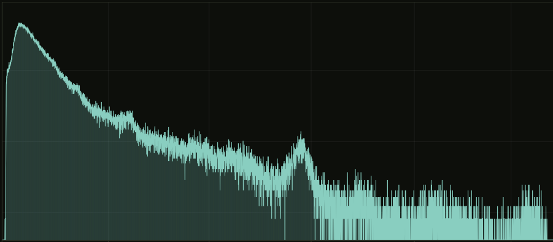

Пять открытых инструментов для гамма-спектрометрии. ESP32-S3 подключается к спектрометру по USB и раздаёт спектр по WiFi — весь комплект работает в поле от обычного павербанка.
Five open tools for gamma spectrometry. An ESP32-S3 bridges the spectrometer over USB and streams the spectrum over WiFi — the whole kit runs in the field from an ordinary power bank.

Питание не привязано к телефону или ПК. Комплект потребляет ≈1 Вт и раздаёт спектр по WiFi.
Untethered field operation from a power bank.
Готовые .exe на страницах релизов, прошивка платы заливается флешером в несколько кликов.
Prebuilt .exe releases, flashing in a few clicks.
N42.42, BecqMoni, InterSpec, ЛСРМ и RadiaCode — данные открываются в привычном ПО.
Opens in the analysis software you already use.
Пять репозиториев, закрывающих полный путь сигнала: прибор → шлюз → приём → анализ.
Сердце комплекта: плата ESP32-S3 подключается к спектрометру по USB (OTG Host) и заменяет телефон или ПК — спектр смотрят в браузере с любого устройства в той же сети. Web UI показывает живой 8192-канальный спектр с маркерами линий и мощностью дозы, водопад накоплений и мониторинг платы; в поле шлюз сам поднимает точку доступа и работает от павербанка. Накопленное хранится на flash и выгружается прямо из браузера в форматах BecqMoni, InterSpec, N42.42 и ЛСРМ .spe. Для десктопного ПО открыт TCP-мост (порт 8234): BecqMoni или wf-recorder получают поток так, будто прибор подключён напрямую.
Анализ длительных записей: суточный лог разворачивается в 3D-поверхность или 2D-карту «время × энергия», где короткий всплеск активности или дрейф фона виден сразу — без перебора сотен спектров вручную. Любой момент записи раскрывается в обычный спектр, любая энергетическая линия — в график её хода во времени; выделенный ROI сверяется с библиотекой 21 нуклида. Читает .aswf, RadiaCode .rcspg и N42.42; многочасовые файлы грузятся потоково, без загрузки целиком в память.
Страховка длинных сессий: клиент на ПК периодически забирает сегменты водопада со шлюза и сшивает их в единый .aswf — суточная запись не зависит от открытой вкладки браузера и переживает обрывы WiFi. Сегмент удаляется с платы только после подтверждённой записи на диск (fsync); целостность контролируют CRC32 и порядковые номера, поэтому пропуск в записи виден сразу, а не при разборе данных. Параллельно ведёт лог температуры платы в CSV; на странице релизов — готовый .exe без зависимостей.
Убирает главный барьер — прошивку платы: вместо esptool и командной строки — окно с двумя списками. Флешер сам находит COM-порт, скачивает актуальный релиз прошивки с GitHub и заливает его по USB в несколько кликов; обновление на новую версию — та же процедура. Один инструмент обслуживает четыре проекта: AtomSpectra, AtomFast, Radex, RadonEye.
«Рентген платы» на случай, когда прибор и шлюз не видят друг друга: диагностическая прошивка прогоняет цепочку Boot → WiFi → USB Host → Enum → Detect → Handshake и показывает в Web UI, на каком именно звене обрывается связь. Читает USB-дескрипторы и endpoints, выполняет FTDI vendor init и пробует SHPROTO-рукопожатие — вместо гадания по симптомам получается точный диагноз. Ставится one-click флешером; перед тестами обязателен backup настроек прибора (см. README), после — возврат штатной прошивки тем же флешером.
Кликните по узлу — раскроется подробное описание этапа и скриншоты. Click a node for a detailed description and screenshots.
Тот же интерфейс, что открывается в браузере при подключении к шлюзу — вкладки «Спектр», «Водопад», «Мониторинг». Можно покликать прямо здесь. The actual gateway Web UI — interact with it right here.
демо-режим без подключённого прибора · данные симулированы
Сохранение водопада напрямую на SD-карту платы — многосуточные записи без ПК и без ограничения объёмом flash.
Привязка каждого спектра к координатам приёмника — трек измерений вместе с данными в одном файле.
GPS + автономное питание + непрерывная запись: поиск источников и картирование радиоактивных загрязнений.
Все эксперименты со спектрометрами и подключённым оборудованием вы проводите на свой страх и риск. Проекты предоставляются «как есть» (as is), без каких-либо гарантий. Авторы и участники не несут ответственности за любой вред, прямой или косвенный: повреждение спектрометра, детектора, ФЭУ, ESP32-платы, компьютера или иного оборудования, потерю данных или настроек прибора.
В частности:
-ris, -fall, -nos, -max, -hyst, -U, -V, -step и др.) изменяют внутреннюю конфигурацию обработки сигнала и аппаратные параметры HV/усиления (POT / POT2). Неверные значения могут сбить заводскую настройку детектора или повредить прибор. Параметры индивидуальны для каждого экземпляра — не записывайте их «вслепую» и не копируйте чужие значения.Используя эти проекты, вы соглашаетесь, что понимаете риски и принимаете полную ответственность за свои действия с оборудованием. Полный текст условий — в README каждого репозитория.